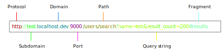

Server Side Scripting in 
Lesson 2
http://cmda.github.io/sss-course/lesson2
Today
- Javascript: Strings, Arrays, Objects
- Javascript: Async
- App server
- Templating
- Consuming APIs
- Deeltoets 1
- Wrap up
Javascript
Numbers
var a = 1; // Number!
var b = 2.5; // Number! (it's a float)
1/0; // Infinity
1/"a"; // NaN
(0.1 + 0.2 == 0.3) // = false
Strings
var a = 'this is a string';
var b = 'this is another string';
var c = a + ' ' + b // 'this is a string this is another string'
Arrays
var a = []; // Empty Array
var b = [1, 2, 3]; // Arary of numbers
b.push(4); // Add to array: [1,2,3,4]
b.pop(); // 4 [1,2,3]
b.forEach(function(value){ console.log(value); }); // Iterate
b.map(function(value){ return value + 1 }); // [2,3,4]
Objects
var a = {}; // Empty object
a.name = "SSS"; // {name : "SSS"}
a["teachers"] = ["Edwin", "Flurin"]; // {name : "SSS", teachers : [...]}
a.pass = function(){ return true; };
a.pass(); // true
Object.keys(a); // ["name", "teachers"]
Google "Javascript MDN [function_or_object]", or use MDN directly: https://developer.mozilla.org/en-US/docs/Web/JavaScript
Learn JavaScript
Codeacademy
(http://www.codecademy.com/tracks/javascript)
USE THE REPL
USE THE REPL
Javascript: Async
An aspect of node.js is it asynchronously, making it very fast.
Synchronous code
// NOT REAL CODE
var file = readFile("file.txt"); // Executions blocks here...
output(file); // ... and done
console.log("klaar");
Asynchronous code
// NOT REAL CODE
readfile("bestand.txt", function(file){
output(file);
console.log("klaar"); // Done with bestand.txt...
}); // Read file asynchronous
readfile(..., fn) // Our code continues...
Sync v.s. Async
Sync
Async
Asynchronous calls
- Callbacks
- Events
Callbacks
A function that gets called when the async operation is done
Callback example
var callback = function(){
console.log("done");
}
setTimeout(callback, 2000);
Callback example
var request = require("request");
var url = "http://api.openweathermap.org/data/2.5/weather?q=Amsterdam,nl";
request(url, function(error, response, body){
if (!error && response.statusCode == 200) {
console.log(body) // Print the weather.
}
});
Events
Something that can happen once or more times at at any time
Express.js App server
Client <-> (http)server
Client" />A server
var http = require('http');
var server = http.createServer(function (req, res) {
res.writeHead(200, {'Content-Type': 'text/plain'});
res.end('Hello World\n');
})
server.listen(1337, '127.0.0.1');
console.log('Server running at http://127.0.0.1:1337/');
Express
Fast, unopinionated, minimalist web framework for Node.js
MVC
Model - View - ControllerInstall it
$ npm install --save express
Simplest Express example
// app.js
var express = require('express');
var app = express();
// Add a reponse route
app.get('/', function(req, res){
res.send('Hello World!');
});
// Start the server
app.listen(3000, function () {
console.log('Started!');
});
Run it
$ node app.js
Router *
- URL structure
- HTTP request handling
- HTTP response generation
* Controller.
URLs
Router example
// routes/weather.js
var express = require('express');
var router = express.Router();
router.get('/', function(req, res){
res.send('Hello world (from router)!');
});
module.exports = router;
Using the router
// app.js
var express = require('express');
var app = express();
var weatherRouter = require('./routes/weather');
app.use('/weather', weatherRouter);
// Start the server
app.listen(3000);
Using multiple routers
// app.js
var express = require('express');
var app = express();
var weatherRouter = require('./routes/weather');
var indexRouter = require('./routes/index');
app.use('/', indexRouter);
app.use('/weather', weatherRouter);
// Start the server
app.listen(3000);
Query string
// routes/weather.js
var express = require('express');
var router = express.Router();
router.get('/', function(req, res){
var location = req.query.location;
res.send('Who is the weather in ' + location + '?');
});
module.exports = router;
Parameters
// routes/weather.js
var express = require('express');
var router = express.Router();
router.get('/', function(req, res){
res.send('This is the weather service!')
});
router.get('/location/:location', function(req, res){
var location = req.params.location;
res.send('Who is the weather in ' + location + '?');
});
module.exports = router;
Coffebreak
Back in 10 minutes
Templating
Up until now...
// routes/weather.js
// ...
router.get('/', function(req, res){
var output = '<html><head>Weather </head><body>\n';
output += 'Welcome!
\n';
output += 'This is the weather service
';
output += '</body></html>';
res.send(output)
});
// ...
MVC
Model - View - ControllerTemplates (view)
- Put HTML (or whatever) in separate files
- Pass data to the template
EJS
Embedded javascript
<%= name %>
Test results:
<% if(passed){ %>
Yay, you passed!
<% } else { %>
FAIL!
<% } %>
Setting up views
-
Install EJS
$ npm install --save ejs -
Tell express to use EJS:
app.set('view engine', 'ejs'); -
Tell express where to find the views:
app.set('views', __dirname + '/views'); - Create a view file
-
Render the view:
router.get("/", function(req, res){ res.render("index"); })
Setup data
router.get("/", function(req, res){
res.render("index", {
name : "Dr. Evil",
location : "Secret Lair"
});
})
Using data
Hello, <%= name %> from <%= location>
Includes
<% include partials/header %>
... my template ...
<% include partials/footer %>
Don't put logic in your templates or HTML in your code.
Consuming APIs
Request
Installing Request
$ npm install --save request
Example
var request = require("request");
var url = "http://api.openweathermap.org/data/2.5/weather?q=Amsterdam,nl";
request(url, function(error, response, body){
if (!error && response.statusCode == 200) {
console.log(body) // Print the weather.
}
});
Wrapping up
What we learned today
- Javascript strings, objects, arrays
- How to learn more about javascript
- Node.js asynchronous operations and callbacks
- Setting up Express.js app
- Writing routers with params
- Doing templating with EJS and using includes
- Get stuff from the internet with "request"
Deeltoets 1
- Werkcollege van 4 december
- Op papier, zonder laptop
- 20 minuten
Doel
Doel van de toets is het begrijpen van JavaScript en de concepten zoals behandeld in de hoor- en werkcolleges.
Voorbeeld 1
// moetikeenjasaan.js
var moetIkEenJasAan = function(temp, regen){
if(temp > 15 && !regen){
return 'Nee, dat is niet nodig';
} else if(temp > 15 && regen){
return 'Je kunt ook een paraplu meenemen';
} else {
return 'Ja, dat is wel verstandig.';
}
};
// Vraag:
// Wat is de uitkomst van moetIkEenJarAan(10, true)
Voorbeeld 2
var calculate = function(expenses){
var calculate = {};
expenses.forEach(function(expense){
if(calculate[expense.type]){
calculate[expense.type] += expense.kosten;
} else {
calculate[expense.type] = expense.kosten;
}
});
return calculate;
};
var uitgaven = [
{name: 'Collegeld', type: 'studiekosten', kosten: 1800},
{name: 'Snowboard', type: 'vakantie', kosten: 350},
{name: 'Snowboardschoenen', type: 'vakantie', kosten: 200},
{name: 'Studieboek', type: 'studiekosten', kosten: 250},
{name: 'Kaas', type: 'boodschappen', kosten: 4},
{name: 'Collegeklapper', type: 'studiekosten', kosten: 2},
{name: 'Brood', type: 'boodschappen', kosten: 2},
{name: 'Melk', type: 'boodschappen', kosten: 1},
];
calculate(uitgaven);
Werkcollege en huiswerk
Huiswerk: lezen
- Hoodstuk 3.2, t/m 3.4 (p 46 t/m 67)
- Hoodstuk 8, t/m 8.3 (p 176 t/m 193)
- Minder belangrijk: "view caching"
Klaar voor werkcollege
Huiswerk: doen
- Doe de oefeningen uit codeacademy
- Begin met de exercises
Klaar voor werkcollege
* Static files
* Redirects